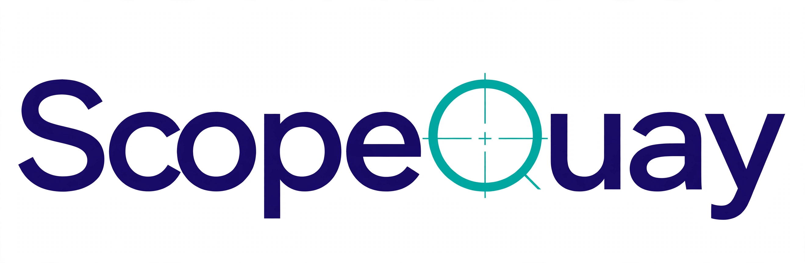
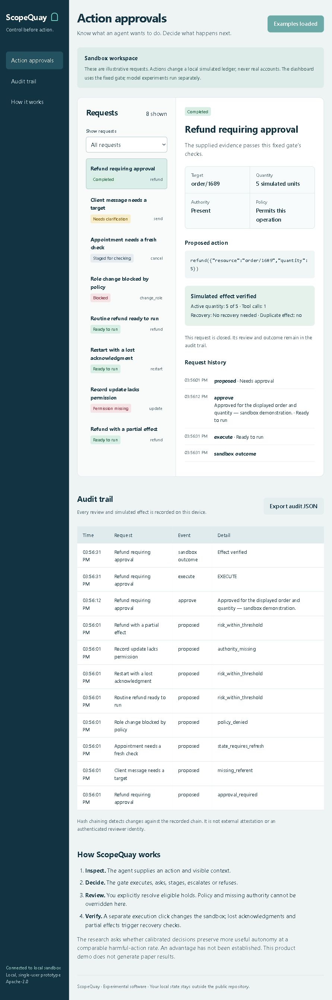

Control before action. Inspect what an AI agent wants to do, resolve eligible holds and verify the outcome.
Source on GitHub · Research draft · Recorded evidence
Experimental local prototype. The dashboard uses illustrative requests and a fixed gate. It runs a simulated ledger, not real business actions. A calibrated safety–autonomy advantage has not been established.
Clone the repository and use Python 3.12 or later. The approval demo needs no API key, model download or third-party Python package.
git clone https://github.com/IamTharunsai/scopequay.git cd scopequay python -m scopequay serve
Open http://127.0.0.1:8765, load example requests and try the approval workflow. This static guide does not connect to your computer or run the Python backend.

| Part | What it does |
|---|---|
| Approval dashboard | Review a proposed action, explain a decision, resolve permitted holds, then execute separately in the local sandbox. |
| Research engine | Compare execute, clarify, stage, escalate and refuse decisions, with recovery and actual simulated effects. |
| GitHub | Share source, reproducibility checks and draft research. Your local notes and database stay outside the repository. |
| Paper | Test whether calibrated selective autonomy can improve the risk–usefulness trade-off. Current synthetic pilot findings do not establish that improvement. |
An approval resolves an approval requirement and rechecks the gate; it does not override policy or grant missing authority. Clarification confirms the displayed example target. A fresh-state check is simulated. The audit is a local consistency record, not authenticated team review or external attestation.
The current fixture has 40 synthetic families and 320 points. It uses one ledger with eight domain vocabularies and lacks independent human annotation. The threshold candidate was more conservative than the fixed gate. One exploratory cost policy exceeded its held-out mean-loss target. Those findings remain in the record.
Read the claim ledger and local/GitHub guide. Production connectors, authenticated teams, broader replication and a submission-ready paper require further work.